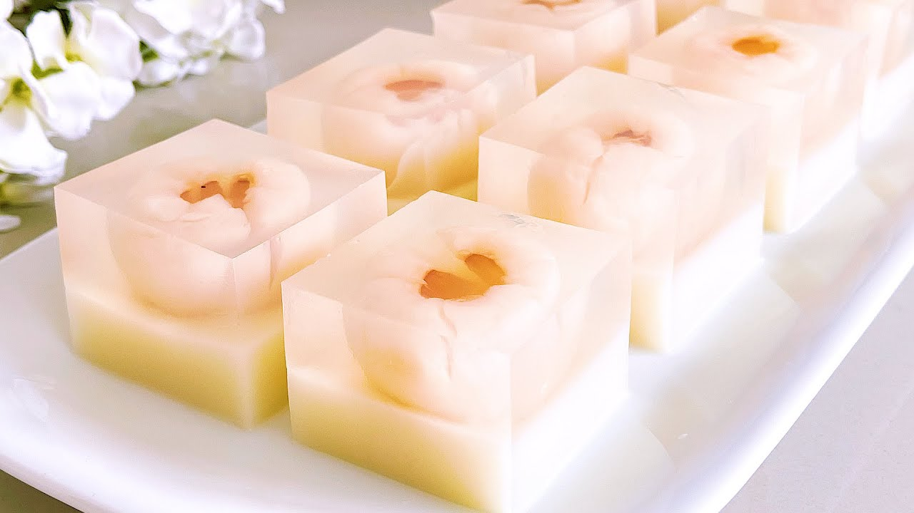

Lychee Agar-Agar

Description
This is a recipe for making lychee agar-agar.
It is one of my favourite recipes because of how easy and quick it is to make,
and that it doesn't require many ingredients.
This is the perfect summer desert,
and a batch of it can last a full week in the fridge.
You won't be able to resist grabbing a piece or two every couple of hours!
This recipe is from the fantastic folks at Ruyi's Asian Kitchen.
I like how the agar-agar has a mild sweetness that nicely
balances out the stronger syrupy flavour of the lychees.
The addition of a soy-milk based bottom layer also adds to
the visual appeal of this dessert, and is sure to grab people's attentions!
Ingredients
- 1 can lychee, 565 grams (16 lychees)
- 10 grams agar-agar powder
- 200 grams sugar
- 120 ml lychee water
- 680 ml water (room temperature)
- 200 ml soya milk (unsweetened, room temperature)
Steps
- Strain the lychees from the syrup in the can.
- Measure 120 ml of the syrup into a pot, and add in agar-agar powder, sugar, and water. Mix thoroughly.
- Cook the mixture on low heat until it boils, while stirring occasionally.
- Pour 3/4 of the mixture (about 600 ml) into the mold. Remove any air bubbles.
- Pour in the soya milk to the remaining mixture in the pot, and set aside. Close the lid so that the heat is trapped inside the pot and it does not solidify.
- Tear the top part of the lychee slightly so that it looks like a flower.
- Arrange the lychees in the mold upside down.
- After the lychees have been arranged well and the base agar-agar layer forms a film, pour the soya milk mixture onto this layer in the mold. Pour gently at the sides so that it does not pierce the base layer. Remove any air bubbles, and then let it set.
- Once both layers have set, place the mold in the fridge to chill.
- Just before eating, remove the agar-agar from the mold, and cut it into cubes.